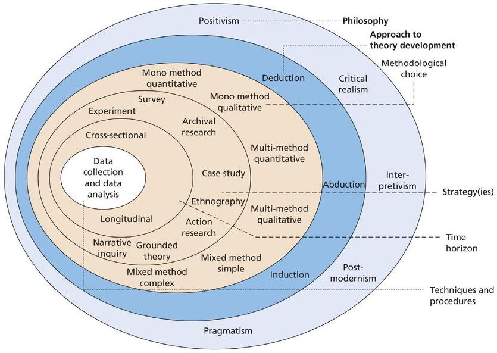
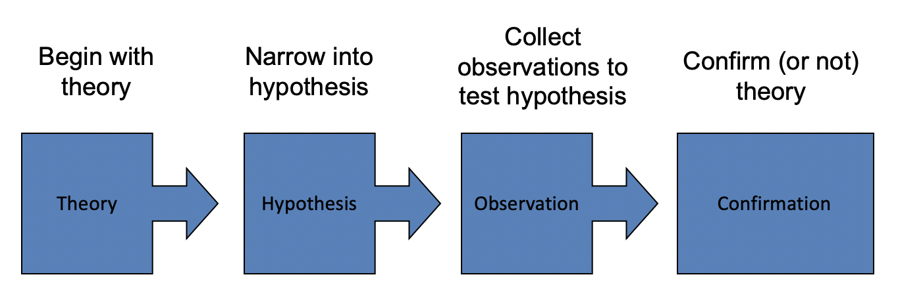
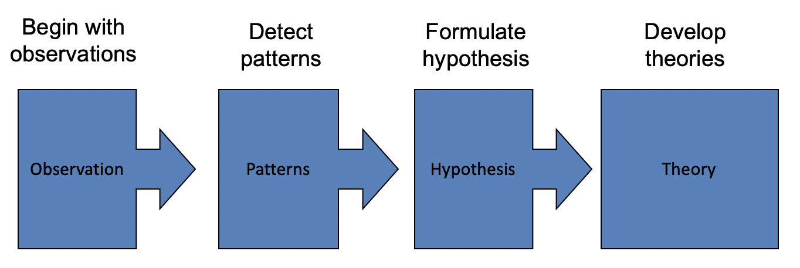
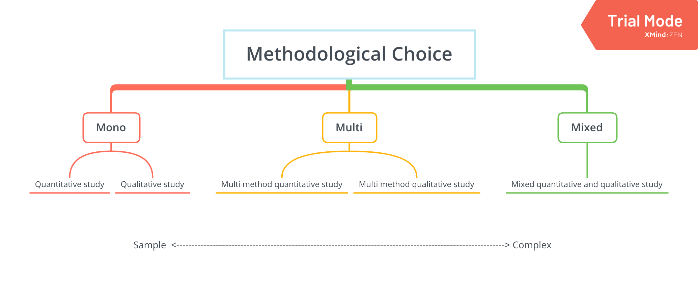

1. Searching for sources
1.1. Academic sources
- Yes
- Books
- Paper
- Goverment website
- No
- Wikipedia
- Newspaper
- Aim
- Make sense of what other researchers have done
- Get a better sense of what you can do
- Plus many things that you read will end up being sources for your final project
1.2. Keywords
It’s pivotal to find keywords of your research before your searching
- where to look
- General dictionaries
- Subject dictionaries
- Thesauruses
- Encyclopaedias (print and electronic)
- Theses in the library
1.3. Search engines
Remember to refine your search to include/exclude dates, publication type, topic etc
- NUsearch
- Google Scholar
- Google Books
- JSTOR
1.4. The search process
- Decide on your key search terms
- Search for possible sources linked to your topic
- Screen papers,selecting only those which are relevant and of high quality
- Check relevance by reading the Abstract
- Repeat steps 1~4 multiple times, building up a bibliographic source list
- Remember to change the scope/detail of review, depending on literature that appears during search
1.5. How to use the source you find ?
- Remember to make the most of your time with it!
- If the article has an abstract, read it first!
- Highlight potential sources that might work for you
- Take careful notes
- Remember to write down the bibliographical information for your references
- Write down any key words that you haven’t come across before
- Look at the author’s references
1.6. Developing a focus
| Topic | Answer |
|---|---|
| Rationale Why is this topic important? Who will it be important to? |
This is an important topic because… |
| Aim What your research project hopes to achieve? |
This project aims to… |
| Objectives How you will achieve your aim? |
To achieve this aim, my research will attempt to meet the following research objectives: |
| Research question(s) / Hypothesis These are the questions you hope to answer. They are linked to your research objectives |
My research question(s) / hypothesis is… |
1.7. Textbook Reading
- pp. 7 – 24
2. Reading for purpose
2.1. How can you make reading easier?
Two strategies which can help are skimming and scanning.
2.1.1. Skimming
Skimming is good for deciding which books, chapters, articles, etc. are relevant and useful for your purpose.
2.1.1.1. How do you skim read?
- Read the: title, subtitles and subheadings to find out what the text is about
- Look at any illustrations to give you further information about the topic
- Read the first and last sentence of each paragraph
- Don’t read every word or every sentence
- Let your eyes skim over the text
- Take in key words
- Continue to think about the meaning of the text
2.1.1.2. Skim a report
- Identify the key features of the text
- Summarise the main points of the text
2.1.2. Scanning
- Scanning is a time-saving technique
- It is used when you want to find specific information from a source
- When you scan, you will be looking for key words
2.1.2.1. How do you scan?
- Scanning is a fast reading technique
- When reading for study, start by thinking of or writing down some questions that you want to answer
- Don’t try to read every word. Let your eyes move quickly across the page until you find what you are looking for
- Use clues on the page, such as headings and titles to guide you. These can focus your mind and help you find the facts or information that you need more easily
2.1.2.2. Scanning a report
- What is the main idea of the text?
- What aspects of the topic does the author consider?
- What supporting evidence does the author give?
- What ideas does the author have?
3. The Working Bibliography
3.1. The Working Bibliography
This is a detailed list of every source you’re planning to use at this stage of your project
- Organisational skills are essential when conducting a piece of research
- One important aspect is keeping a track of the sources you read
3.1.1. Bibliographic information
- author
- date
- title
- journal
- publisher
- URLs
- page numbers
3.1.2. Make Notes
- key ideas
- arguments
- your views and questions
- how useful it is for your purpose
3.1.3. The benefits of bibliography
- Helps you keep a clear record of what you have read
- Helps you to identify key topics, themes and questions that arise from your reading
- Allows you to easily locate texts again
- Allows you to create a reference list quickly
- Saves you time in the long run!
3.2. Plagiarism
Plagiarism is using the ideas and work of others without acknowledgement
3.2.1. What sources does Plagiarism include ?
- Written information
- Pictures/images/maps
- Tables and figures
- A radio broadcast or a lecture
3.2.2. How to avoid Plagiarism
- Cite your sources
- Paraphrase, summarise and use direct quotes
- Check your understanding of plagiarism
4. Refining the research problem
4.1. Research topic and problem
- A general area or topic that you are interested in researching.
- The research problem is the issue, problem or gap in knowledge you wish to explore.
- You must explain why the problem is interesting to you, why it is worth researching and define what will be investigated.
4.2. Research objectives
What it is you want to achieve from your research.
- General research objectives : A broad statement about what your research intends to achieve (its goals)
- Specific research objectives : Detailed statements about what will be researched during the project
4.3. What is a working title?
An initial title that you have thought of to help establish a focus for your research.
4.4 What is a research question?
A research question is a question you seek to answer through conducting research.
4.5. What is a ‘good’ research question?
- Firstly, it must be answerable
- The concepts must be distinct and testable
- Secondly, it should be clear
- Its meaning must be explicit
- Thirdly, it should have theoretical significance or practical relevance
- Will the research question generate new information/ understanding about the topic
4.6. Question your research question
- Do you have enough time and resources to investigate the question thoroughly?
- Will you be able to collect enough information for an in-depth discussion of the topic?
- Can the topic be further divided into a reasonable number of sub-topics?
- Are all the keywords, concepts, and variables involved precisely defined?
- Can the results of the research be applied to any other situation, or are they limited to the situation you have studied?
4.7. What is Rationale ?
The reason and justification behind our research
- It establishes the importance of the topic.
- It creates reader interest.
- It focuses the reader’s attention on how the study will add to the existing literature.
5. Critical reading
5.1. What is critical thinking?
A way of looking at the relationship between claims. (Statements that assert that something is a fact or truth. Claims need not be true, though we normally take it that they are)
- Claims can be
- Evidence from research
- Historical evidence
- Predictions
5.2. Five activities in critical thinking
- Thinking Actively by using our intelligence, knowledge, and skills to question, explore, and deal effectively with ourselves, others, and life’s situations.
- Carefully Exploring Situations by asking-and trying to answer–relevant questions.
- Thinking for Yourself by carefully examining various ideas and arriving at our own thoughtful conclusions.
- Viewing Situations from Different Perspectives to develop an in-depth, comprehensive understanding.
- Supporting Diverse Perspectives with Reason and Evidence to arrive at thoughtful, well-substantiated conclusions.
5.3. How to become a critical reader ?
- Before reading, consider your own interim position
- Be open-minded. Be prepared to change your views after reading
- Be both receptive and critical of an author’s views
- Decide how far you agree/disagree with an author
- Carefully consider the evidence presented by the author to support their case.
5.4. Reading critically
- looking for poor logic
- identifying fact and opinion
- identifying omission
5.5. Descriptive and analytical writing
| Descriptive writing | Analytical writing |
|---|---|
| States what happened States what something is like Gives the story so far States the order in which things happened Says how to do something Explains what a theory says Explains how something works Notes the method used Says when something occurred States the different components States options Lists details States links between items |
Identifies the significance Evaluates the strengths and weaknesses Weighs one piece of information against another Makes reasoned judgements Argues a case according to the evidence Shows why something is relevant or suitable Indicates why something will work best Identifies whether something is appropriate or suitable Identifies why the timing is of importance Weighs up the importance of component parts Gives reasons for selecting each option Evaluates the relative significance of details Structures information in order of importance Shows the relevance of links between pieces of information |
- Descriptive writing : Provides information
- Analytical writing : Uses information to draw conclusions
- Essay
- Literature review
- Annotated bibliography
- Critique
5.6. Critical writing
5.7. The SQ3R Method
- Survey
- Title page
- Table of contents
- Preface
- Index
- Bibliography
- Glossary
- Appendices
- Leaf through the book/article
- First and last chapters
- Surveying a chapter
- Question : Never start detailed reading until you have some clear questions requiring an answer.
- Read : Reading in detail
- Recall
- Depending on the text, try to recall the key points made by each paragraph within a section, preferably in your own words.
- Jot down the key words.
- It can be useful to try and recall the main explanatory sentence in each paragraph.
- Review : Always check the accuracy of what you recall by viewing again the material you have studied.
5.8. Thinking critically
- How does the item relate to others you have read?
- Are there any apparent strengths and deficiencies - perhaps in terms of methodology or in terms of the credibility of the conclusions drawn?
- What theoretical ideas have influenced the item
6. Research approaches and design
6.1. The Research Onion
The ‘Research Onion’ was developed by Saunders et al. It helps to illustrate the philosophical and theoretical issues relating to the development of knowledge that underpin the methods that can be used to collect and analyse data.

- Layer 1 Research philosophy
- Layer 2 Research approach
- Layer 3 Methodological approach
- Layer 4 Research strategy
- Layer 5 Time horizon
- Layer 6 Data collection and analysis
6.2. Layer 1 Research philosophy
- There are different research philosophies with their own beliefs and assumptions about how we seek and use knowledge.
- Positivism
- Critical
- Realism
- Interpretivism
- Post-modernism
- Pragmatism
- Each research philosophy will lead you to a certain type of research with its own goals. It will also lead you to different methodologies to achieve those goals.
6.2.1. Why is it important to understand the different research philosophies?
- Each philosophy makes assumptions about knowledge that will guide your research and lead you to use certain research methods e.g. interviews or questionnaires. This should result in a coherent piece of research.
- As a researcher, you need to select an appropriate research philosophy to underpin your work and be aware of its strengths and weaknesses.
- It is important for a researcher to be able to explain philosophically why they made the choices they did when planning their research.
6.2.2. Research philosophies can be distinguished by three different types of assumption.
- Ontology: “Assumptions about the nature of reality”
- e.g. What is the world like? What is it like being a manager?
- Epistemology: “Assumptions about knowledge”
- e.g. How can we know what we know? What is acceptable knowledge?
- Axiology: Considers the role of values and ethics within the research process.
- e.g. How to deal with our own and participants’ values
6.2.3. Positivism
“as an approach to social science develops from the traditions of the natural sciences. It is based on an ontological assumption that the world is governed by a series of rules and laws and an associated epistemological position that these rules can be tested and understood through experiments. Such a position therefore favours quantitative methods, as these are seen to be objective, and the results generalizable.”
- Textbook Reading: PP.108~110
6.2.4. Interpretivism
“is based on an ontological assumption that there is no objective reality – no singular way of understanding the world. Instead, reality is seen as subjective, with people having varied experiences and perspectives, and thus interpretations of the social world. In order to understand the social world, we therefore need to understand and explain these varying experiences and perspectives. It follows, then, that we should adopt qualitative methods so as to understand the rich and complex lives and opinions of the people we are researching.”
- Textbook Reading: PP.110~111
6.3. Layer 2 Research approaches
Research approaches refer to the relationship between theory and data.
6.3.1. Deduction: Testing theory
Deduction is often associated with quantitative research
- The researcher formulates a hypothesis on the basis of a set of theoretical ideas and tests them.
- Data is used to evaluate hypotheses related to existing theory
- Theory is verified (true) or falsified (untrue)
- This approach is characterised as objective and ‘scientific’
- It is dominant within the sciences, but is also used within the social sciences
6.3.1.1. Deductive reasoning
- Deductive reasoning works from the more general to the more specific

6.3.2. Inductive: Developing theory as a result of collecting data
Induction is often associated with qualitative research
- The researcher starts with people’s perceptions and uses these as the starting point for building theory
- Data is used to explore phenomenon, identify themes and create concepts
- Theory is generated and developed
- This approach is characterised as subjective
- It is dominant within the social sciences
6.3.2.1. Inductive reasoning
Inductive approaches move from specific observations to broader generalizations and theories

6.3.3. Further understanding
- Textbook Reading: PP. 125~127
6.4. Layer 2 Methodological choice
6.4.1. Quantitative vs Qualitative
| Quantitative | Qualitative |
|---|---|
| Numbers Singular truth Point of view of researcher Macro Detached, objective researcher Theory testing Static Structured Hard, specific data Facts Eg. questionnaire and statistical analysis |
Words Multiple truths Point of view of participants Micro Involved subjective researcher Theory generation Processual Unstructured Deep, contextual data Meaning Eg. interview and analysis of themes/categorie |
6.4.2. Single or multiple methods
- Mono : method studies use a single method
- Multi : method studies use multiple quantitative or multiple qualitative methods
- Mixed : method studies use a combination of quantitative and qualitative methods

6.5. Research strategies
Research strategies refer to the different ways a researcher can answer their research question(s).
- Survey
- Case study
- Ethnography
- Experiment
- Archival and documentary research
- Action research
- Grounded theory
- Narrative inquiry
6.5.1. Survey
- The collection of quantitative data which are analysed using statistics.
- Useful in testing relationships between variables.
- Usually associated with deductive approach.
- Usually used for exploratory and descriptive research (what/who/where/how much/how many questions).
- Common strategy in business and management research.
- Data collection techniques
- Questionnaires (often tick box questions)
- Structured interviews (standardised questions asked of all participants)
| Strengths | Weaknesses |
|---|---|
| 1.Useful for collecting a lot of data 2.Viewed as ‘authoritative’ |
1.But data collected more likely to lack depth |
6.5.2. Ethnography
- Ethnographic studies explore culture or social world of a group and people interact with each other
- The collection of qualitative data which are analysed qualitatively (Eg. using coding or establishing themes)
- Usually associated with inductive approach
- Usually used for exploratory and descriptive research
- Common strategy within anthropology, less frequently adopted in business research
- Data collection techniques
- Living with participants
- Observing participants
- Talking to participants
| Strengths | Weaknesses |
|---|---|
| 1.Useful for gaining deep insight into participants’ lives | 1.Results can lack generalisability due to its focus on particular groups or cultures 2.Lacks objectivity as the researcher is highly involved |
6.5.3. Case study
- Collection of quantitative and/or qualitative data in a real-life setting which can be analysed using statistics or qualitatively
- Can be associated with either deductive or inductive approach
- Can be used for exploratory, descriptive and explanatory research (addresses what, why and how questions)
- Common strategy in business research
- Single and multiple case studies may be used
- Data collection techniques
- Questionnaires
- Interviews
- Observations
- Documentary analysis
| Strengths | Weaknesses |
|---|---|
| 1.Useful for collecting different types of data, gaining a rich understanding of context 2.Able to explore issues in depth |
1.Results can lack generalisability (therefore may not be possible to apply to different settings) |
6.6. Textbook Reading
- Critical reading: pp. 66-70
- Quantitative and Qualitative research: pp. 119-120
- Research design: pp. 121 – 133
- Design frames: pp. 156 -166